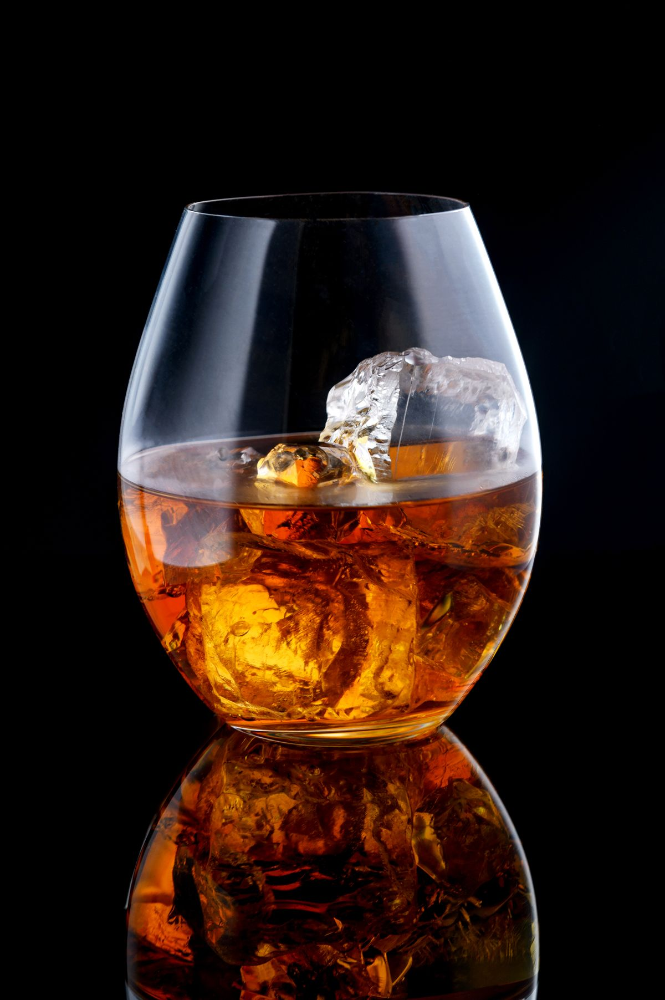
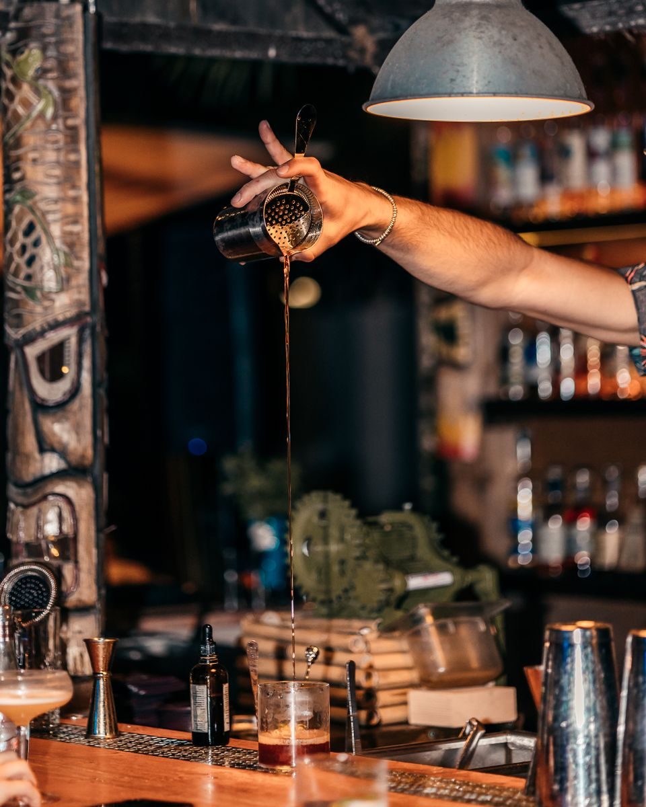

一杯を選ぶ楽しさ
ウイスキーやカクテルなど、お酒の種類が豊富。迷ったときはマスターに相談を。

A LITTLE PAUSE IN UEDA
ウイスキーも、カクテルも。
迷ったら、好みを話すところから。
一人でも、仲間とでも。
営業時間 【要確認：営業時間・定休日】
01 — ABOUT US
上田市中央のバー、kamikaze。
口コミから伝わるのは、お酒の豊富さと、
気さくなマスターのいる親しみやすい雰囲気です。
使い込まれたカウンターでゆっくりと。
アメリカの小さな町を思わせる空間は、
一人の夜にも、仲間と語らう夜にも。
Googleマップの口コミの傾向をもとに構成しています。

ウイスキーやカクテルなど、お酒の種類が豊富。迷ったときはマスターに相談を。
カウンターで気ままに、テーブル席で和やかに。それぞれの夜の過ごし方で。
旅先で立ち寄る一軒や、二軒目にも。遅い時間の営業は、お電話でご確認ください。
03 — VISIT US
営業時間・アクセス
kamikaze カミカゼ
【要確認：最寄り駐車場・上田駅からの道順】
Googleマップで開く （新しいタブ）住所周辺の地図です。入口・ビル内の位置はご来店前にご確認ください。
04 — CONTACT
営業状況やお席についてのご確認は、お電話で。
最新情報はInstagramをご覧ください。